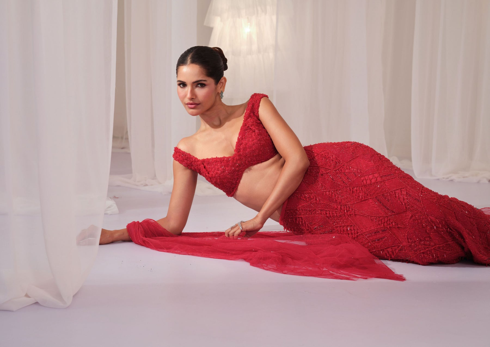

Mumbai — Est. in Craft
Made-to-order bridal wear — corsets, lehengas, Indo-Western — conceived in Mumbai and worn across the world.
Introducing
Rich textures, fluid drapes and a little shimmer. Handwoven brocades, sculpted corsets and draped skirts, made to order in Mumbai.
“Every lehenga, every corset, every draped silhouette — handcrafted for the woman who wants her wedding to begin the moment she dresses.” Existing manifesto section, shown only so the hero can scroll away